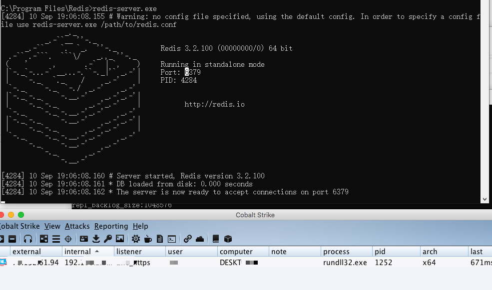

本文测试了Redis在Windows平台下的dll劫持，主要参考文章是先知的秋水师傅: Redis on Windows 出网利用探索
测试环境
Redis-x64-3.2.100
Win10
可劫持的DLL
按照文章中使用Process Monitor，在使用redis-cli操作的时候，观察缺失的DLL。在Process Monitor Filter里面设置Image Path的值为redis-server.exe的路径，比如我的是C:\Program Files\Redis\redis-server.exe，Path设置为ends with dll。设置好之后，使用redis-cli连接，执行bgsave命令，然后观察缺失的dll，有如下:
HKLM\System\CurrentControlSet\Control\Srp\GP\DLL
C:\Program Files\Redis\dbghelp.dll
C:\Windows\System32\edgegdi.dll
C:\Windows\System32\symsrv.dll
当redis-server.exe启动的时候，有如下:
C:\Windows\System32\edgegdi.dll
C:\Windows\System32\symsrv.dll
C:\Program Files\Redis\CRYPTBASE.DLL
执行BGREWRITEAOF的时候，有如下:
HKLM\System\CurrentControlSet\Control\Srp\GP\DLL
C:\Program Files\Redis\dbghelp.dll
C:\Windows\System32\edgegdi.dll
C:\Windows\System32\symsrv.dll
最终在Redis目录下可以利用的有两个:cryptbase.dll和dbghelp.dll。如果是权限持久性控制，两个都可以，这里我们选择主动攻击，所以使用dbghelp.dll。
DLLHijacker
使用kiwings师傅的DLLHijacker，因为在系统里面是存在C:\Windows\System32\dbghelp.dll的，所以，复制出来之后，运行脚本，生成DLL工程项目。修改里面的shellcode和dbghelp.dll的绝对路径。
在实际测试的时候，运行脚本报错，所以修改了一部分代码: https://github.com/JKme/sb_kiddie-/tree/master/dll_hijack
把生成的dll重命名为dghelp.dll放在redis的安装目录，然后执行bgsave或者redis-server启动的时候会执行shellcode。

测试结果
在实际的渗透测试中，使用RedisWriteFile写入文件的时候，因为使用的是主从复制，会把redis里面的数据清空，这样攻击之后可能会被发现，所以可以这样做:
备份redis
备份:
./redis-dump-go -host 192.168.2.233 -output commands > redis.dump
恢复:
redis-cli -h 192.168.2.233 < redis.dump